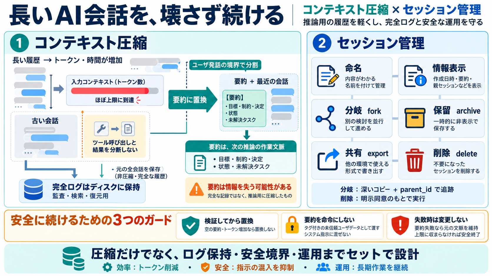

LLM Models for 8GB VRAM: 2026 Guide - Mr. Appz
Qwen3.5-9B: 5.68-6.17 GB on disk (Q4\_K\_M), ~6.8-7.2 GB VRAM. Multimodal (text+image+video), MoE, 201 languages, thinki…

長い会話を 続ける
コンテキスト圧縮 × セッション管理
要約（compaction / 圧縮）でLLMへの入力を抑えつつ、命名・分岐・アーカイブ・エクスポート・削除まで運用可能にします。
LLMには入力トークン上限（context window）があり、会話が長くなるほど毎回のリクエストでコスト（時間・トークン）が増えます。
圧縮（compaction）要約は、次のLLM推論に直結する「作業用文脈」としてプロンプトへ組み込まれます。
ツール呼び出しと結果を壊すと不整合が起きるため、要約対象の分割位置は「最後のユーザ発話境界」で選びます。
要約が空・置換後のトークン推定が増えるなどの場合は例外で止め、要約コール増分だけが損になる事態を防ぎます。
圧縮（compaction）は情報損失が起こり得るため、元トランスクリプトはディスクに残し、圧縮は“作業文脈置換”として扱います。
要約内容はシステムメッセージへ直接混ぜず、タグ付きのユーザデータとして埋め込み、“新しい命令ではない”ことを明示します。
長期運用で必要な機能を一通り実装し、命名（/title、--rename）、情報表示（/info）、分岐（/fork、--fork）を提供します。
分岐・保留・共有・削除を整備し、深いコピー（deep copy）とparent_idで出どころを追跡できるようにします。
要約（コンパクション）LLM呼び出しが失敗した場合は文脈置換を行わず、コンテキストを変更しません。
一覧ラベルの要約は発見用途に近い一方、圧縮要約は推論の実データになるため、“命令として扱わない”境界と前提維持が不可欠です。
コンテキスト圧縮（compaction）とセッション管理（life cycle）をセットで実装すると、長期作業を壊れにくく継続できます。
Qwen3.5-9B: 5.68-6.17 GB on disk (Q4\_K\_M), ~6.8-7.2 GB VRAM. Multimodal (text+image+video), MoE, 201 languages, thinki…
Gemma 4 is Google DeepMind’s open model family, released in April 2026 under the Apache 2.0 license. Built from the same…
\ 1 \ \ \ \ 3 \ 64 \ 600 \ = 8080 = 240 = 1 = 240 = 240 \ "vllm" \ =$(IFS =','; echo "${CONT…
that haven't quite existed yet) its impressive how it can synthesize answers to deep subjects. Its knowledge in biology …
| Target Deployment Engine | Download Suffix | Primary Use Case | --- | llama.cpp / LM Studio (Local) | `{model-name}-…